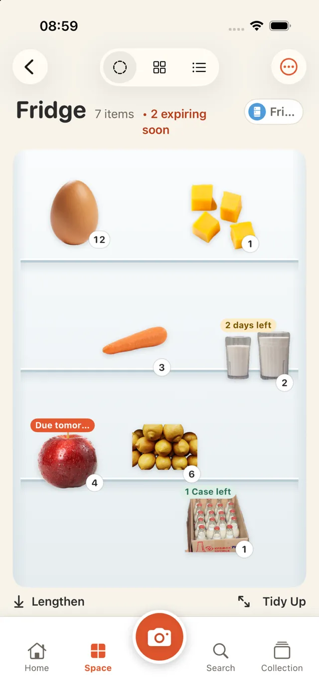
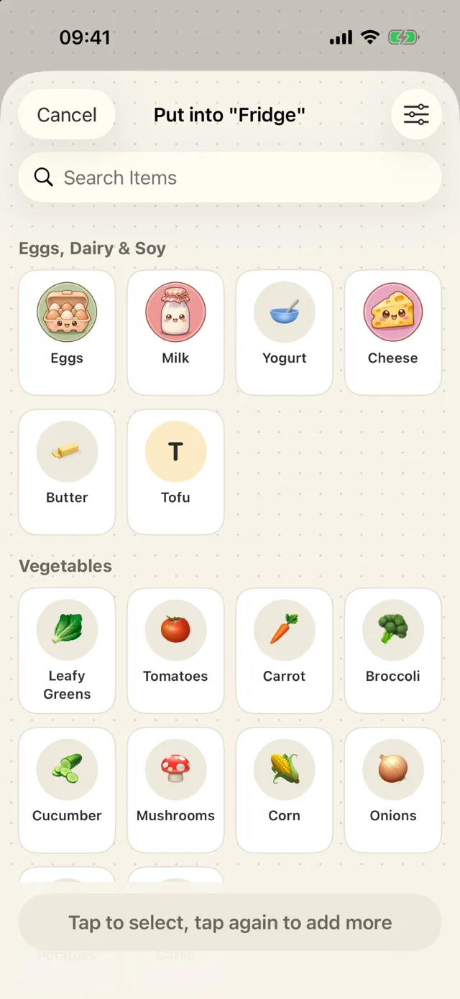
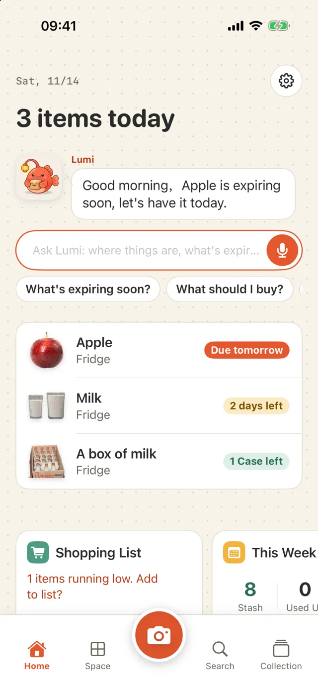
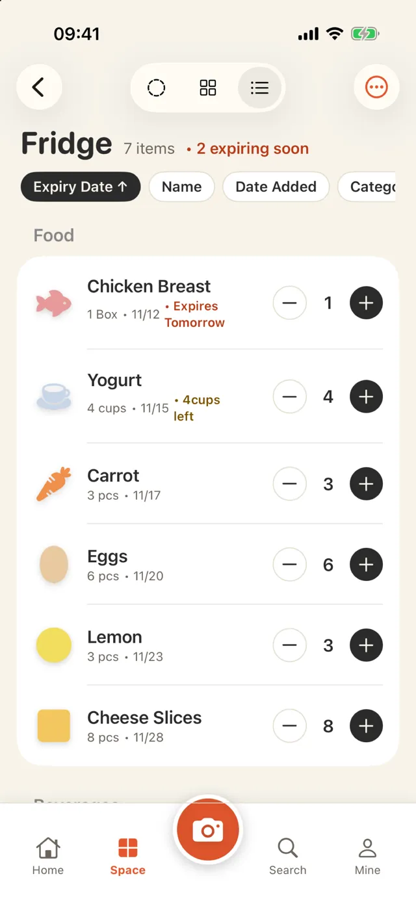
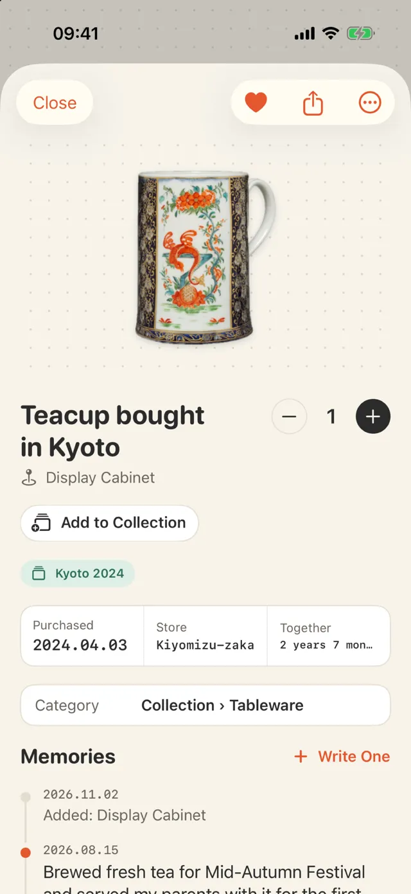
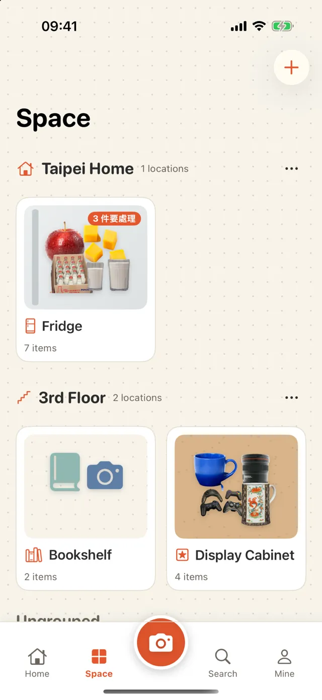
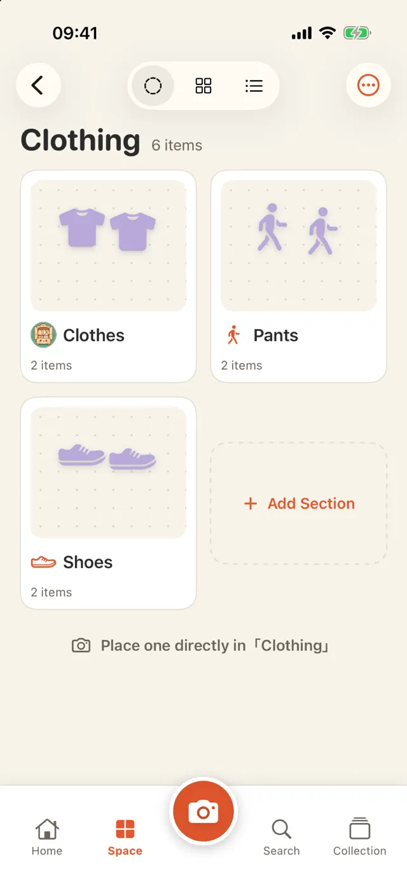
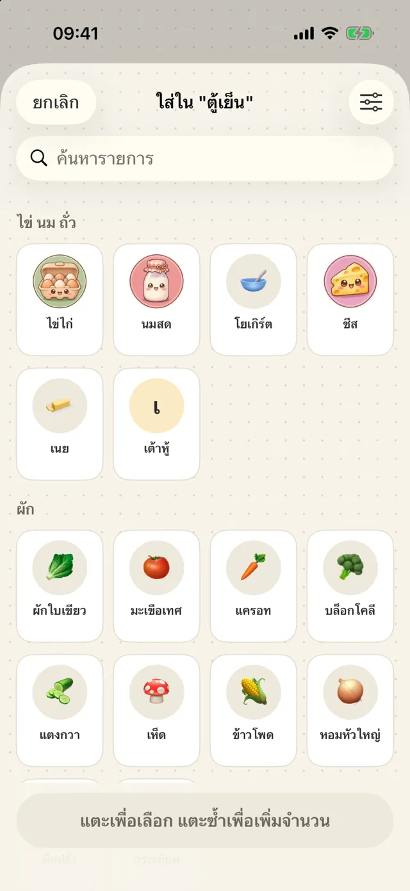
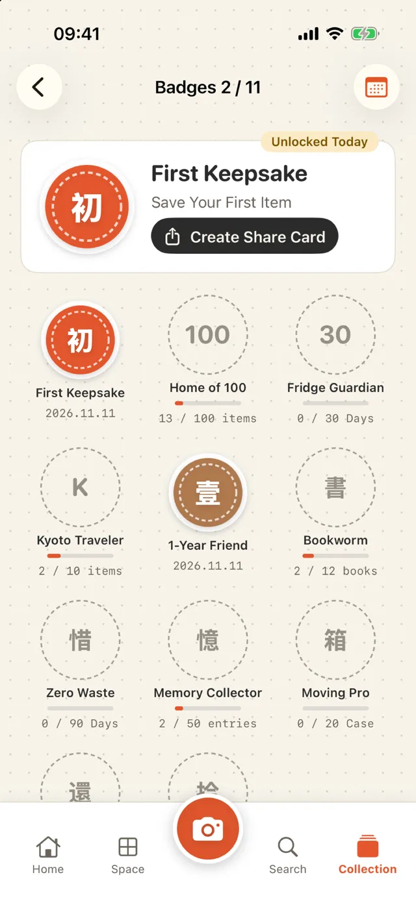

Home inventory and keepsakes for iPhone
Snap it, and it's stored.
Search, and it's found.
The milk in the fridge, the paper towels in the closet, the books on the shelf, the cup you brought back from a trip. Take one photo. Where it is, how many are left and when it expires stay on your phone.
Download on the App Store- ✓ Free to download, 3 places free
- ✓ No account
- ✓ Data stays on your iPhone
Add
One photo, cut out and stored
Point at something and tap the shutter; the background is removed automatically. The same camera reads barcodes: food is looked up on Open Food Facts, books on Open Library. Back from shopping, Continuous scan stores a dozen items in one go.

Quick List
Skip the photo, just tick it
For things you buy all the time, such as eggs, milk and paper towels, tap them in the Quick List to add them, tap again for more, and the expiry date is filled in from the usual shelf life. Fridge, cabinet, medicine box and wardrobe each have their own list; add or remove entries and swap in your own photos.

Three views
Display, grid or list
Display lays photos out on a fridge door, dotted paper or a corkboard, and you can drag and resize them. The grid is for finding things; the list is for stocktaking, with plus and minus buttons and a swipe to mark something used up.
Zoom In
Just the background and the photos
When a display fills up, tap Lengthen for another page and scroll down to see it. Zoom In hides the title and buttons so the place fills the whole screen; you can still drag, resize and tap a photo to open it.

Expiry dates
The phone reads the date on the package
When you take a photo, the expiry date printed on the package is read and you confirm it. A notification reminds you a few days before; you choose how many.

Keepsakes
Write down the story of anything you keep
A cup from a trip, a gift from a friend: add photos, a date, a place and a few lines. Group them into collections such as "Kyoto 2024". "On this day" brings them back to the home screen.

Places
Fridge, 800 Closet, bookshelf, or your own
Templates include fridge, 800 Closet (a walk-in storage closet about 80 cm deep), cabinet, bookshelf, wardrobe, collection shelf, medicine box and moving boxes. Or pick an icon and a name yourself. Group places by home or floor if you like.

Layers
Places inside places
Clothing can hold Clothes, Pants and Shoes, and its card shows the places inside. To move one, use Move into… in the menu, or long-press and drag it onto another card. Categories have subcategories too, such as Clothing › Pants, picked automatically when you save.

Ask Lumi
Can't find it? Ask
On the home screen, ask Lumi the mascot "where is my passport" or "is there any milk left", by typing or holding to talk. Lumi answers with where it is, how many are left and when it expires. Speech is recognized on the phone whenever the phone can do it, and it works without AI by matching names, categories and places.

When it helps
- Before shopping, see what's in the fridge
- Cook what expires first
- Find where the AA batteries are
- Remember who borrowed a book
- List what went into each moving box
- Sort out travel souvenirs
- Check the medicine box for expired items
See it in 50 seconds
Switching the fridge between three views, changing amounts, looking inside Clothing, opening the memories of a keepsake, and asking Lumi what expires soon.
AI (optional)
Everything works without AI. If you want it, there are two sources. Once AI is on, it is called when you tap an AI button, and once a day for the short note on the home screen.
Apple built-in
Apple Intelligence on your iPhone: free, offline, data never leaves the phone. Needs a supported iPhone and iOS 26 or later.
Your own API key
Gemini, Claude, DeepSeek and others. The key is kept only in this iPhone's keychain, and data goes straight to the service you chose, not through us.
- Name it: recognizes the thing in the photo and suggests a category and unit
- Look at this place: what to eat first in the fridge, what to restock in the closet, what has expired in the medicine box (no medical advice)
- Find with a sentence: adds synonyms, then searches
- Polish a memory: turns a few words into a paragraph without adding anything you didn't say
Badges and share cards
Thirty days without anything expiring in the fridge earns "Fridge Guardian". Badges, item stories and a year in review can be saved as images; location and price are left out by default.

Details
| Device | iPhone (iOS 18 or later) |
|---|---|
| Languages | English, 繁體中文, 简体中文, 日本語, 한국어, ไทย |
| Price | Free download (with a banner ad, 3 places, the 2 most recent chats with Lumi); Pro removes the ads and both limits: US$1/week, US$3/month or US$5 once |
| Account | Not needed |
| Data | Only on this iPhone, export as CSV; deleted items can be restored for 30 days |
| Network | Used only for barcode lookups and the AI service you choose |
Limits
- No iCloud sync or family sharing yet
- Products missing from the barcode databases need a name from you; the next scan of that barcode uses it
- Cut-outs depend on the photo; if it fails, the original photo is used
Your data stays on your iPhone
- No account, no server
- Free version shows non-personalized ads only, no tracking
- Camera and photos are used only when you use them
Start with the fridge
Open Deepstash, choose Fridge, and photograph the three things you buy most.
Download on the App Store